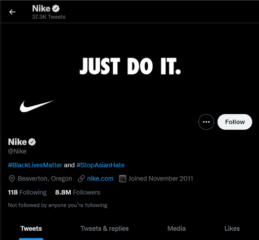

As the political climate changes, more people turn to social media to advocate for social change. Some corporations have seen the change in climate and have used their social media for good. However, are the intentions to push for social change, or to gain profit? You will be presented with examples of visual activism within a corporate setting and reasons why corporations do this in the first place.
Corporations are defined as a legal entity that's separate from their owners. Corporations can make a profit, be taxed, and can be held legally liable. [U.S. Small Business Administration]
Activism is defined as the effort to inform or convince groups to advocate for the change of a usually perceived corrupt system or institution. It means pushing for social good in a social, economic, environmental, or political sphere.
Corporations have increasingly begun to perform actions unrelated to their businesses. American politics have a great presence on the internet, and due to this, corporations have taken a position on controversial issues. This is a new concept to the world of business, however, as it was not traditionally expected for corporations to publicly support or condemn political opinions.
“Data visualization is concise, understandable, and self-explanatory. It uses a careful choice of color scheme to enhance style and appeal. When in use, it must grab the attention of users.”* There is a simplicity to the visuals that make little room for confusion, in order to effectively inform an audience.
Visual infographics normally look like a color scheme, contrasting or complementing colors with minimal text and little to no graphics. Using attention-grabbing headlines/hashtags, an infographic on social media will garner interactions through likes, comments, or shares, and therefore be successful in the algorithm.
Similarly, marketed advertisements on the internet are simple, impactful, and persuasive. They exist to quickly garner attention, interaction, and customers.
Infographics on the web are typically used as ways to concisely explain information or convince a user.
Corporations have marketed their products in similar fashions, as discussed previously, but when activism meets the internet, what do corporations do to get involved?
![Uber's Instagram post reads “Uber
stands in solidarity with the Black community and with peaceful protests
against the injustice and racism that have plagued our nation for too
long. My hope is that if each of us recommits to doing all we can to
counter bigotry wherever we see it, change will follow. But it’s clear
that lasting change will only come from reforming the systems that have
led us to where we are today. To that end, we are donating $1M to the
Center for Policing Equity and the Equal Justice Initiative to support
their important work in making criminal justice in America more just for
all. Dara Khosrowshahi, CEO, Uber”.](images/uberBLM.jpg)
Uber We stand with the Black community. We stand with those peacefully protesting injustice, hatred and racism. We stand in support of orgs like the Center for Policing Equity @eji_org working to make America more just for all.

A Twitter bio from the official Nike account as of October
30, 2021
nike
Our hearts are with our Asian community. We stand united with our
partners to create a more inclusive future.
For more information, click the link in bio.
#StopAsianHate
nike We will continue to stand up for equality and work to break down barriers for athletes* all over the world. We will do and invest more to uphold longstanding commitment in supporting the Black community and partnering with world-class organizations dedicated to ensuring racial equality, social justice, and greater access to education. For more information, please click the link in the bio.
568,236 likesTo achieve justice, we don’t need just thoughts and prayers — we need education and action. The below thread offers some ways to learn about our country’s history, its impact on the present, and the underlying conditions that led to the murder of George Floyd. pic.twitter.com/GYUcvb4w0N
— Ben & Jerry's (@benandjerrys) June 5, 2020
During the height of the Black Lives Matter movement in mid-2020, social media accounts made trends out of the hashtag #BLM, #GeorgeFloyd, and #SayHisName. Images like the ones used by Nike, Uber, and Ben & Jerry’s were posted, and companies came forward with their stances on the movement through tweets, Insta captions, and profile bios. The commonality was simplicity. A solid black background, a minimum character limit, a promise for corporate involvement—these were consistent in both the social media accounts and in the posts themselves.
This commonality is no coincidence—there is a reason corporations use this as a cordant source of response. However, the answer to their reasoning is difficult to pinpoint when there are many reasons corporations have indoctrinated this form of activism.
The long-standing speculation over corporate responsibility has arrived to many conclusions. Some believe corporations benefit from activism and the good public image it brings is motivation to involvement. Others believe it is out of pure altruism, to spread information necessary in today’s society and to do the right thing.
One study in the International Journal of Academic Research in Business and Social Sciences in 2016 found that consumers tend to engage more when a company is involved in corporate activism. [Consumer Perception of Corporate Activism: Strategic Implication for Marketing]
However, one thing is for certain. The rise of corporate activism and its continued strategy through visual activism has a solid correlation—the rise of the internet.